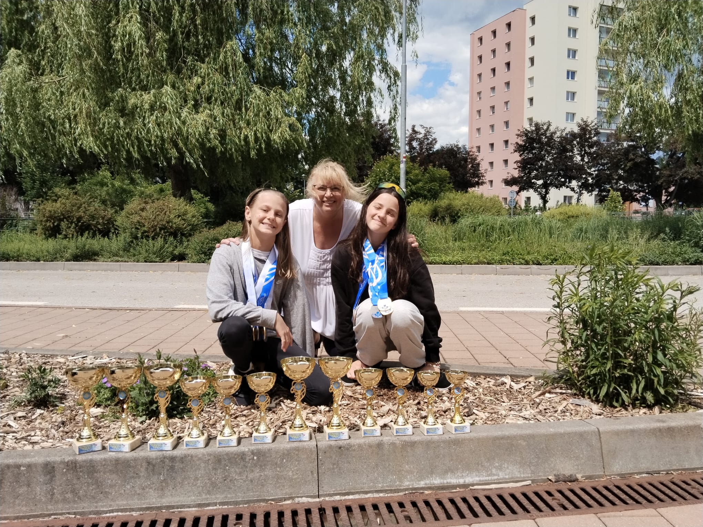
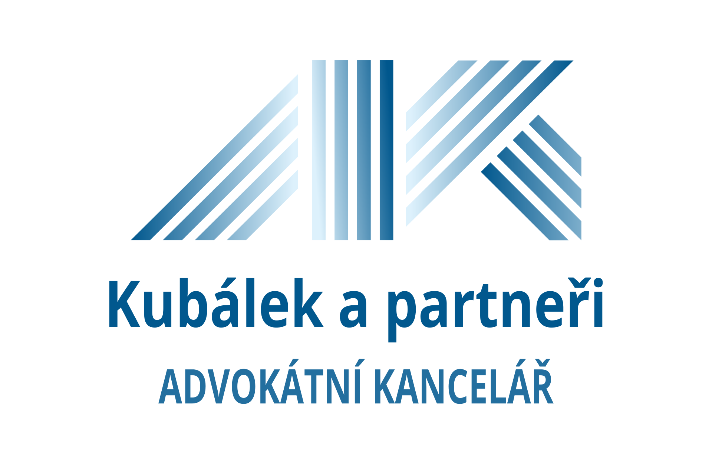
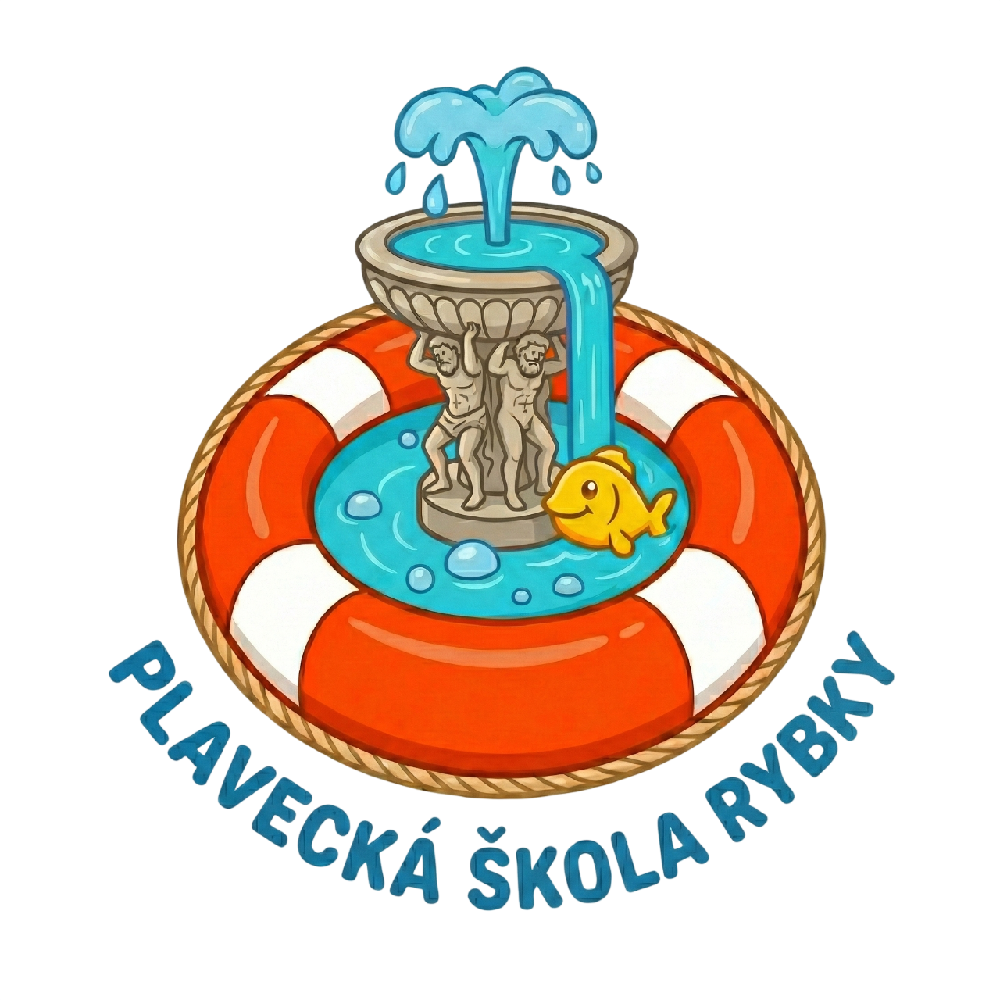

KIN České Budějovice
Plavecký oddíl s tradicí od roku 1951

Nejúspěšnější plavecký oddíl v jižních Čechách
Plavecký oddíl s tradicí od roku 1951
Jsme plavecký oddíl s nejdelší tradicí v Českých Budějovicích. Od prvních temp až po závodní dráhu – učíme děti nebát se vody a vychováváme z nich sebevědomé sportovce.
Plavte s těmi nejlepšími.
KIN v číslech
startů
závodů v sezóně
rekord ČR
Závody · 22. listopadu 2026
Ela Kubálková vyhrála 7 ze 8 dokončených disciplín, ve třech z nich i celkové pořadí žen. Zoe Tůmová přidala 2 zlata a 7 stříber – KIN ovládl kategorii žaček 12.
Číst celou reportáž →Partnerství · září 2026

Advokátní kancelář Kubálek a partneři se rozhodla podpořit českobudějovické plavání. Děkujeme!

Kurzy pro neplavce od 4 let (možnost 1x týdně)
Kondiční plavání (alespoň 1x týdně)
Máte zájem? Vyplňte přihlášku online:
Přihláška člena KIN Vyplnit online → uložit jako PDF →Zobrazit podrobnosti o partnerech →